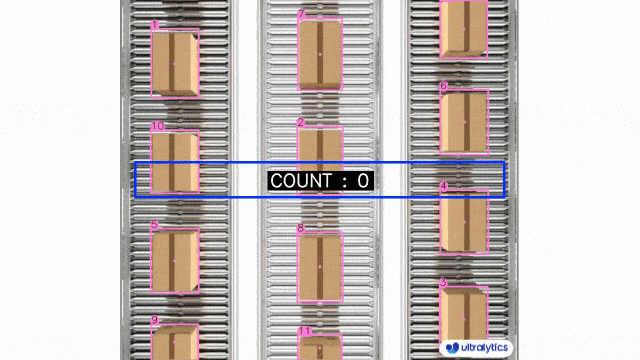

本文旨在梳理并总结项目过程，方便后续回顾查阅。
部分预测结果：
一、目标检测的应用场景 基于深度学习的目标检测，目前在各个领域都有广泛的应用场景，可以归纳为以下几类：
交通领域：智能驾驶、智能交通、行人跟踪、车辆检测
工业领域：瑕疵检测、裂缝检测、归类检测、智能农业
商业领域：直播检测、商品检测、文本检测
医学领域：细胞检测、病灶检测

二、项目描述 1.任务描述
基于YOLOv8和自定义数据集UNIMIB2016，对pretrained model进行fine tune来添加新的类别（意大利菜），从而实现对菜品的识别检测
使用 W&B sweep 进行 hyperparameter tune（超参数调优），来进一步优化模型性能
2.数据集 UNIMIB2016 Food Database ，数据集在一家真实的意大利餐厅中收集而来，每张照片的尺寸为 (3264, 2448)，包含一个托盘和托盘上不同的食物。
因为菜品原文是意大利语，我用AI对其进行了翻译，大致中文译名如下：
编号
意大利语
中文翻译
0
pane
面包
1
mandarini
橘子
2
carote
胡萝卜
3
patate/pure
土豆/土豆泥
4
cotoletta
炸肉排
5
fagiolini
青豆
6
yogurt
酸奶
7
budino
布丁
8
spinaci
菠菜
9
scaloppine
薄切肉片
10
pizza
披萨
11
pasta_sugo_vegetariano
素食酱汁意大利面
12
mele
苹果
13
pasta_pesto_besciamella_e_cornetti
香蒜酱白酱意大利面和羊角面��
14
zucchine_umido
炖西葫芦
15
lasagna_alla_bolognese
博洛尼亚千层面
16
arancia
橙子
17
pasta_sugo_pesce
海鲜酱汁意大利面
18
patatine_fritte
炸薯条
19
pasta_cozze_e_vongole
贻贝和蛤蜊意大利面
20
arrosto
烤肉
21
riso_bianco
白米饭
22
medaglioni_di_carne
肉丸
23
torta_salata_spinaci_e_ricotta
菠菜和羊乳酪馅饼
24
pasta_zafferano_e_piselli
藏红花和豌豆意大利面
25
patate/pure_prosciutto
土豆/土豆泥配火腿
26
torta_salata_rustica_(zucchine)
乡村馅饼（西葫芦）
27
insalata_mista
混合沙拉
28
pasta_mare_e_monti
海陆意大利面
29
polpette_di_carne
肉丸
30
pasta_pancetta_e_zucchine
意大利熏肉和西葫芦意大利面
31
pasta_ricotta_e_salsiccia
羊乳酪和香肠意大利面
32
orecchiette_(ragu)
意大利小耳面（肉酱）
33
pizzoccheri
荞麦面疙瘩
34
finocchi_gratinati
烤茴香
35
pere
梨
36
pasta_tonno
金枪鱼意大利面
37
riso_sugo
米饭配酱汁
38
pasta_tonno_e_piselli
金枪鱼和豌豆意大利面
39
piselli
豌豆
40
torta_salata_3
馅饼 3
41
torta_salata_(alla_valdostana)
馅饼（瓦尔多斯坦风格）
42
banane
香蕉
43
salmone_(da_menu_sembra_spada_in_realta)
鲑鱼（菜单上看起来像剑鱼）
44
pesce_2_(filetto)
鱼 2（鱼片）
45
bruscitt
烤面包片
46
guazzetto_di_calamari
鱿鱼炖菜
47
pasta_e_fagioli
意大利面和豆子
48
pasta_sugo
意大利面配酱汁
49
arrosto_di_vitello
小牛肉烤肉
50
stinco_di_maiale
猪腿
51
minestra_lombarda
伦巴第炖菜
52
finocchi_in_umido
炖茴香
53
pasta_bianco
白面意大利面
54
cavolfiore
花椰菜
55
merluzzo_alle_olive
橄榄鳕鱼
56
zucchine_impanate
炸西葫芦
57
pesce_(filetto)
鱼（鱼片）
58
torta_crema_2
奶油蛋糕 2
59
roastbeef
烤牛肉
60
rosbeef
烤牛肉
61
cibo_bianco_non_identificato
未识别的白色食物
62
torta_crema
奶油蛋糕
63
passato_alla_piemontese
皮埃蒙特蔬菜汤
64
pasta_e_ceci
意大利面和鹰嘴豆
65
crema_zucca_e_fagioli
南瓜和豆子奶油
66
focaccia_bianca
白底油炸饼
67
minestra
汤
68
torta_cioccolato_e_pere
巧克力梨蛋糕
69
torta_ananas
菠萝蛋糕
70
rucola
火箭菜
71
strudel
德式卷饼
72
insalata_2_(uova_mais)
沙拉 2（鸡蛋和玉米）
3.项目环境
Software/Hardware
Version
OS
Linux-5.15.0-101-generic-x86_64-with-glibc2.35
Python
3.10.13
W&B CLI Version
0.16.5
ultralytics
8.0.186
PyTorch
2.2.0
CUDA
12.1
CPU
E5-2696 v4
GPU
1 x RTX A4000
GPU Memory
16G
Memory
32G
HDD
80G
三、数据预处理 1.标注(label)数据提取 原数据集中的每张图片，都有对应的label，保存在annotations.mat文件（.mat文件是Matlab的Map对象）中，需要先将其提取出来，这里我参考了这篇博文 ，代码如下：
1 2 3 4 5 6 7 8 9 10 11 12 13 14 15 16 17 18 19 20 21 22 23 24 25 26 27 28 29 30 31 32 33 34 35 36 37 38 39 40 41 42 43 44 45 46 47 48 49 50 51 52 53 54 55 56 57 58 59 60 61 62 63 64 65 66 67 68 69 70 71 72 73 74 75 76 clc; clear; output = './formatted_annotations/' ; load('annotations.mat' ); image_names = annotations.keys; n_images = numel (image_names); for j = 1 : n_images image_name = image_names{j }; tuples = annotations(image_name); count = size (tuples,1 ); coordinate_mat = cell2mat(tuples(:,6 )); file_path = [output image_name '.txt' ]; ffile = fopen(file_path, 'w' ); for k = 1 : count item = tuples(k,:); fprintf(ffile, '%s %d %d %d %d %d %d %d %d\n' , ... string(item(2 )), ... coordinate_mat(k,:)); end fclose(ffile); end
运行上述Matlab脚本文件，在./formatted_annotations文件夹下生成以图片名命名的*.txt文件，每一行的格式为class x1 y1 x2 y2 x3 y3 x4 y4（如下所示）
1 2 patate/pure 2000 1200 2680 1200 2680 1950 2000 1950 pasta_mare_e_monti 843 667 1623 667 1623 1467 843 1467
这里的x1 y1代表检测框的左上顶点，顺时针依此类推。
2.数据集有效性检查 这里主要做两个检查：
图片和label是否一一对应
label格式是否正确（即需要按照class x1 y1 x2 y2 x3 y3 x4 y4中间用空格隔开）
检查代码如下：
1 2 3 4 5 6 7 8 9 10 11 12 13 14 15 16 17 18 19 20 21 22 23 24 25 26 27 28 29 30 31 32 33 34 35 36 37 38 39 40 41 42 43 44 45 46 47 48 49 50 51 52 53 54 55 56 57 import osf_path = os.path.join(os.getcwd(), '../source/annotations/formatted_annotations' ) img_path = os.path.join(os.getcwd(), '../source/original' ) def check_dataset () : annotations = [i[:-4 ] for i in os.listdir(f_path)] imgs = [i[:-4 ] for i in os.listdir(img_path)] for annotation in annotations: label = annotation + '.txt' label_path = os.path.join(f_path, label) try : if annotation not in imgs: print('not found image: {}, remove its annotation' .format(annotation)) print(label_path) old_img_path = os.path.join(img_path, annotation + '(0).jpg' ) new_img_path = os.path.join(img_path, annotation + '.jpg' ) os.rename(old_img_path, new_img_path) raise FileExistsError else : with open(label_path) as f: lines = f.readlines() for line in lines: item = line.split() if len(item) > 9 : print('wrong label format: {}, {}' .format(annotation, line)) raise FileExistsError except FileExistsError: pass if __name__ == '__main__' : check_dataset()
上述代码实际已经包含了修复图片和label的功能。因为实际检查中会发现有21个label找不到对应的image（如下图）
但仔细观察，这21张图片只是文件名后面多了个(0)，将(0)去掉后，与对应label一起显示出来，会发现数据是正常的（中间还遇到了EXIF的问题，具体过程后面再说）
除了上述21张图片名有问题外，还有一个label有异常，它的格式如下：
1 insalata_2_(uova mais) 1017 795 1951 795 1951 1679 1017 1679
就是uova mais里多了一个空格，被判定为异常，于是我把空格用下划线替代了。
3.EXIF问题 这是在检查上面21张文件名异常的图片时遇到的。为了确认这21张图片只是文件名有问题，还是本身就和label不匹配，我需要将它们和label一起显示出来看看，代码如下：
1 2 3 4 5 6 7 8 9 10 11 12 13 14 15 16 17 18 19 20 21 22 23 24 25 26 27 28 29 30 31 32 import cv2import numpy as nplabel = '../source/valid/20151211_122610.txt' image = '../source/valid/20151211_122610.jpg' label_list = [] with open(label) as file: lines = file.readlines() for line in lines: line = line.strip().split(' ' ) label_list.append(line) print(label_list) image = cv2.imread(image) for line in label_list: x1, y1, x2, y2, x3, y3, x4, y4 = map(int, line[1 :]) points = np.array([[x1, y1], [x2, y2], [x3, y3], [x4, y4]]) points = points.astype(np.int32) cv2.polylines(image, [points], True , (0 , 0 , 255 ), 4 ) cv2.imshow('Image' , image) cv2.waitKey(0 ) cv2.destroyAllWindows()
显示出来发现label和菜品对不上，但仔细观察发现，似乎把图片旋转一下就能对上了
在查阅了一些资料 后，知道是EXIF信息造成的问题。简单来说，EXIF 信息就是由数码相机在拍摄过程中采集一系列的信息，然后把信息放置在我们熟知的 JPEG/TIFF 文件的头部，也就是说 Exif信息是镶嵌在 JPEG/TIFF 图像文件格式内的一组拍摄参数（如下图）
其中的EXIF Orientation tag（EXIF方向参数）让你随便怎么照，在电脑上都可以看到正确方向的照片，而无需手动旋转
在目标检测中，给数据集做标记的时候，是不关注图像的 EXIF Orientation tag，而图像本身是含有 EXIF Orientation tag 的，某些软件（比如cv2）在读取图片时，对其做了旋转，导致label和图片对不上，所以需要我们手动移除EXIF信息，代码如下：
1 2 3 4 5 6 7 8 9 10 11 12 13 14 15 16 17 18 19 20 21 22 23 24 25 26 27 28 29 30 31 32 33 34 35 import osfrom PIL import Imageimport numpy as npimg_type = '.jpg' path = os.path.join(os.getcwd(), './dataset/images' ) def rectify_imgs () : for img_name in os.listdir(path): if not img_name[-4 :] == img_type: continue img_path = os.path.join(path, img_name) image = Image.open(img_path) data = list(image.getdata()) image_without_exif = Image.new(image.mode, image.size) image_without_exif.putdata(data) image_without_exif.save(img_path) print(img_name) if __name__ == '__main__' : rectify_imgs()
移除后的图片没有了EXIF信息：
和label一起显示的效果，都对应上了：
4.类别统计 主要是看一下类别分布情况，编写代码如下：
1 2 3 4 5 6 7 8 9 10 11 12 13 14 15 16 17 18 19 20 21 22 23 24 25 26 27 28 29 import osimport pandas as pdpath = os.path.join(os.getcwd(), '../source/annotations/formatted_annotations' ) output = os.path.join(os.getcwd(), './class_counts_result.csv' ) annotations = os.listdir(path) if __name__ == '__main__' : labels = [] for annotation in annotations: with open(os.path.join(path, annotation)) as file: for line in file: item = line.split() cls = item[0 ] labels.append(cls) counts = pd.Series(labels).value_counts() counts.to_csv(output, header=False )
部分数据如下，发现类别存在分布不平衡的情况，对后续训练和检测效果会有一定影响
5.label格式转换 yolov8对label格式有一些要求，如下图：
解释一下：
.txt中的每行代表一个物体
每行的格式为：类名 x中心坐标 y中心坐标 宽 高
数据需要做归一化（0-1之间）
类别以数字代替（从0开始）
所以我们的label还需要做一下转换，以符合上述要求，转换代码如下：
1 2 3 4 5 6 7 8 9 10 11 12 13 14 15 16 17 18 19 20 21 22 23 24 25 26 27 28 29 30 31 32 33 34 35 36 37 38 39 40 41 42 43 44 45 46 47 48 49 50 51 52 53 54 55 56 57 58 59 60 61 62 63 64 65 66 67 68 69 70 71 72 73 74 75 76 77 78 79 80 81 82 83 84 85 86 87 88 89 90 91 92 93 94 95 96 97 98 99 100 101 102 103 104 105 106 107 108 109 110 111 112 113 114 import osfrom PIL import Imagepath = os.path.join(os.getcwd(), '../source/annotations/formatted_annotations' ) img_path = os.path.join(os.getcwd(), '../source/original' ) output_path = os.path.join(os.getcwd(), './labels' ) class_file_path = os.path.join(os.getcwd(), './class_counts_result.csv' ) def convert_box (size, box) : dw, dh = 1. / size[0 ], 1. / size[1 ] x, y, w, h = (box[0 ] + box[1 ]) / 2.0 , (box[2 ] + box[3 ]) / 2.0 , box[1 ] - box[0 ], box[3 ] - box[2 ] return [x * dw, y * dh, w * dw, h * dh] def convert_bbox (ibb) : X = ibb[0 ::2 ] Y = ibb[1 ::2 ] xmin = min(X) ymin = min(Y) xmax = max(X) ymax = max(Y) return xmin, ymin, xmax, ymax def get_classes () : cf = open(class_file_path, 'r' ) clss = [line.split(',' )[0 ] for line in cf.readlines()] cf.close() return clss def toYolo () : annotations = os.listdir(path) clss = get_classes() for annotation in annotations: with open(os.path.join(path, annotation)) as file, open(os.path.join(output_path, annotation), 'w' ) as opfile: img_f_path = os.path.join(img_path, annotation[:-4 ] + '.jpg' ) img = Image.open(img_f_path) size = img.size for line in file: item = line.split(' ' ) cls = item[0 ] cls_num = clss.index(cls) item_bounding_box = list(map(float, item[1 :])) xmin, ymin, xmax, ymax = convert_bbox(item_bounding_box) b = [xmin, xmax, ymin, ymax] bb = convert_box(size, b) item_str = list(map(str, [cls_num] + bb)) line_yolo = ' ' .join(item_str) opfile.write(line_yolo + '\n' ) print(annotation) if __name__ == '__main__' : toYolo()
转换完后的label长这样：
1 2 3 0.7169117647058824 0.6433823529411765 0.20833333333333334 0.30637254901960786 28 0.37775735294117646 0.43586601307189543 0.2389705882352941 0.32679738562091504
6.在Roboflow中管理dataset roboflow 是一个专注于cv模型标注、训练和部署的ML平台，也是yolov8官方推荐的。在整个项目过程中，我觉得使用roboflow做dataset的management很方便，原因有三点：
有version的概念。可以对dataset做不同操作（augmentation、split、resize），然后保存成一个version
根据不同条件，筛选/浏览图片和label
将dataset下载到各算力平台的速度很快
我在准备好dataset后，将它导入roboflow，然后整体浏览下label和图片是否正常：
四、数据集准备 1.YOLOv8 介绍 YOLOv8 是YOLO系列目标检测算法的一个版本，由Ultralytics公司于2023年1月10日开源发布。它在YOLOv5的基础上进行了多项改进，在速度、精度和灵活性方面都取得了显著提升。
可用于图片分类、目标检测、图像分割、目标追踪、姿势估计
其中，用于目标检测的有5个模型（从n到x，模型参数量逐渐增大，mAP逐渐提升，但检测速度会变慢），它们都是基于COCO数据集训练的：
综合考量模型的准确度和速度，本次选用的pretrained model是YOLOv8s，搭配W&B记录过程中的数据和结果。
2.数据集划分 按训练集：验证集：测试集 = 7:2:1比例来划分dataset，代码如下：
1 2 3 4 5 6 7 8 9 10 11 12 13 14 15 16 17 18 19 20 21 22 23 24 25 26 27 28 29 30 31 32 33 34 35 36 37 38 39 40 41 42 43 44 45 46 47 import osimport shutilimport randomimage_dir = './dataset/images' image_files = [f for f in os.listdir(image_dir) if os.path.isfile(os.path.join(image_dir, f)) and f.endswith('.jpg' )] label_dir = './dataset/labels' label_files = [f for f in os.listdir(label_dir) if os.path.isfile(os.path.join(label_dir, f)) and f.endswith('.txt' )] random.shuffle(image_files) total = len(image_files) train_ratio, val_ratio = 0.7 , 0.2 train_files = image_files[:int(total * train_ratio)] val_files = image_files[int(total * train_ratio):int(total * (train_ratio + val_ratio))] test_files = image_files[int(total * (train_ratio + val_ratio)):] os.makedirs(f'{image_dir} /train' , exist_ok=True ) os.makedirs(f'{image_dir} /val' , exist_ok=True ) os.makedirs(f'{image_dir} /test' , exist_ok=True ) os.makedirs(f'{label_dir} /train' , exist_ok=True ) os.makedirs(f'{label_dir} /val' , exist_ok=True ) os.makedirs(f'{label_dir} /test' , exist_ok=True ) for f in train_files: shutil.copy(os.path.join(image_dir, f), f'{image_dir} /train' ) label_file = f.replace('.jpg' , '.txt' ) shutil.copy(os.path.join(label_dir, label_file), f'{label_dir} /train' ) for f in val_files: shutil.copy(os.path.join(image_dir, f), f'{image_dir} /val' ) label_file = f.replace('.jpg' , '.txt' ) shutil.copy(os.path.join(label_dir, label_file), f'{label_dir} /val' ) for f in test_files: shutil.copy(os.path.join(image_dir, f), f'{image_dir} /test' ) label_file = f.replace('.jpg' , '.txt' ) shutil.copy(os.path.join(label_dir, label_file), f'{label_dir} /test' )
3.文件夹结构和dataset.yaml文件 YOLOv8使用自定义dataset训练时，需要编写一个dataset描述文件（dataset.yaml），训练启动时，程序会读取dataset.yaml中的配置信息，加载对应目录下的数据，所以dataset.yaml和实际的目录需要对应起来才能工作。
有如下两种目录组织方式：
（1）coco目录格式
根目录是datasets，下面有一个coco文件夹，coco文件夹下分别有2个子文件夹：images 文件夹直接存放所有图片数据，labels 文件夹直接存放图片对应的*.txt标记文件：
1 2 3 4 5 6 7 8 9 . ├── images │ ├── 20151127_114556.jpg │ ├── 20151127_114946.jpg │ └── 20151127_115133.jpg ├── labels │ ├── 20151127_114556.txt │ ├── 20151127_114946.txt │ └── 20151127_115133.txt
对应的dataset.yaml长这样：
1 2 3 4 5 path: ../datasets/coco train: train2017.txt val: val2017.txt test: test-dev2017.txt
train2017.txt, val2017.txt,test-dev2017.txt中存放训练集、验证集、测试集的图片文件路径，其内容如下所示：
1 2 3 ./images/20151127_114556.jpg ./images/20151127_114946.jpg ./images/20151127_115133.jpg
（2）coco128目录格式 我用的就是这种格式，目录结构长这样：
1 2 3 4 5 6 7 8 9 10 11 coco128 ├── images │ ├── test │ │ └── 20151127_115133.jpg │ └── train │ └── 20151127_114556.jpg └── labels ├── test │ └── 20151127_115133.txt └── train └── 20151127_114556.txt
unimib2016.yaml（配置文件）内容如下：
1 2 3 4 5 6 7 8 9 10 11 12 13 14 15 16 17 18 19 20 21 22 23 24 25 26 27 28 29 30 31 32 33 34 35 36 37 38 39 40 41 42 43 44 45 46 47 48 49 50 51 52 53 54 55 56 57 58 59 60 61 62 63 64 65 66 67 68 69 70 71 72 73 74 75 76 77 78 79 80 81 82 83 84 path: ./unimib2016 train: images/train val: images/val test: images/test nc: 73 names: 0: pane 1: mandarini 2: carote 3: patate/pure 4: cotoletta 5: fagiolini 6: yogurt 7: budino 8: spinaci 9: scaloppine 10: pizza 11: pasta_sugo_vegetariano 12: mele 13: pasta_pesto_besciamella_e_cornetti 14: zucchine_umido 15: lasagna_alla_bolognese 16: arancia 17: pasta_sugo_pesce 18: patatine_fritte 19: pasta_cozze_e_vongole 20: arrosto 21: riso_bianco 22: medaglioni_di_carne 23: torta_salata_spinaci_e_ricotta 24: pasta_zafferano_e_piselli 25: patate/pure_prosciutto 26: torta_salata_rustica_(zucchine) 27: insalata_mista 28: pasta_mare_e_monti 29: polpette_di_carne 30: pasta_pancetta_e_zucchine 31: pasta_ricotta_e_salsiccia 32: orecchiette_(ragu) 33: pizzoccheri 34: finocchi_gratinati 35: pere 36: pasta_tonno 37: riso_sugo 38: pasta_tonno_e_piselli 39: piselli 40: torta_salata_3 41: torta_salata_(alla_valdostana) 42: banane 43: salmone_(da_menu_sembra_spada_in_realta) 44: pesce_2_(filetto) 45: bruscitt 46: guazzetto_di_calamari 47: pasta_e_fagioli 48: pasta_sugo 49: arrosto_di_vitello 50: stinco_di_maiale 51: minestra_lombarda 52: finocchi_in_umido 53: pasta_bianco 54: cavolfiore 55: merluzzo_alle_olive 56: zucchine_impanate 57: pesce_(filetto) 58: torta_crema_2 59: roastbeef 60: rosbeef 61: cibo_bianco_non_identificato 62: torta_crema 63: passato_alla_piemontese 64: pasta_e_ceci 65: crema_zucca_e_fagioli 66: focaccia_bianca 67: minestra 68: torta_cioccolato_e_pere 69: torta_ananas 70: rucola 71: strudel 72: insalata_2_(uova_mais)
五、训练与调优 1.构建baseline model 先用官方默认参数，跑一个baseline model，在此基础上，再进行提升和调优，完整的notebook代码如下：
1 2 3 4 5 6 7 8 9 10 11 12 13 14 15 16 17 18 19 20 21 22 23 24 25 26 27 28 29 30 31 32 33 34 35 36 37 38 39 40 41 42 43 44 45 !nvidia-smi !pip install --upgrade ultralytics==8.0 .186 import ultralyticsultralytics.checks() from ultralytics import settings, YOLOprint(settings) !pip install wandb -qU import wandbwandb.login() wandb.init(project="yolov8_food" , job_type="training" ) model = YOLO('yolov8s.pt' ) from wandb.integration.ultralytics import add_wandb_callbackadd_wandb_callback(model, enable_model_checkpointing=True ) results = model.train(project="yolov8_food" , data='/datasets/unimib2016.yaml' , epochs=25 , imgsz=640 ) model = YOLO('./best.pt' ) metrics = model.val() wandb.finish()
结果如下：
2.增加数据量 考虑到dataset中有73个class，图片的数量相对来说并不多，所以重新对dataset做了划分，舍弃了测试集，按训练集：验证集 = 8:2比例来重新训练，增加数据量，同时增加epoch到50
1 results = model.train(project="yolov8_food" , data='./datasets/unimib2016.yaml' , epochs=50 , imgsz=640 )
和25epoch对比，各项指标均有所提升，但loss下降不明显，具体结果如下：
3.超参数调优 考虑使用W&B的sweep进行超参数调优，进一步提升模型性能。使用起来也很方便，参数结果有直观的分析和展示，notebook代码如下：
1 2 3 4 5 6 7 8 9 10 11 12 13 14 15 16 17 18 19 20 21 22 23 24 25 26 27 28 29 30 31 32 33 34 35 36 37 38 39 40 41 42 43 44 45 46 47 48 49 50 51 52 53 54 55 56 57 58 59 60 61 62 63 64 65 66 67 !pip install --upgrade ultralytics==8.0 .186 import ultralyticsultralytics.checks() from ultralytics import settings, YOLOprint(settings) !pip install wandb -qU import wandbwandb.login() sweep_config = { "name" : "yolov8s_random_search" , "method" : "random" , "metric" : {"goal" : "maximize" , "name" : "mAP50_95" }, "parameters" : { 'lr0' : {'distribution' : 'uniform' , 'min' : 0 , 'max' : 0.015 }, 'lrf' : {'distribution' : 'uniform' , 'min' : 0 , 'max' : 0.015 }, "batch" : {"values" : [8 , 16 ]}, "epochs" : {"value" : 10 }, 'imgsz' : {'value' : 640 }, "optimizer" : {"values" : ["Adam" , "AdamW" ]}, 'momentum' : {'distribution' : 'uniform' , 'min' : 0.6 , 'max' : 0.98 }, 'weight_decay' : {'distribution' : 'uniform' , 'min' : 4e-4 , 'max' : 5e-4 }, 'warmup_epochs' : {'value' : 3 }, 'warmup_momentum' : {'value' : 0.8 }, 'warmup_bias_lr' : {'value' : 0.1 }, 'box' : {'distribution' : 'uniform' , 'min' : 0.045 , 'max' : 8.5 }, 'cls' : {'value' : 0.5 }, 'dfl' : {'distribution' : 'uniform' , 'min' : 0 , 'max' : 2 }, 'nbs' : {'value' : 64 }, 'hsv_h' : {'value' : 0.015 }, 'hsv_s' : {'value' : 0.7 }, 'hsv_v' : {'value' : 0.4 }, "close_mosaic" : {"value" : 0 }, "mosaic" : {"value" : 1.0 }, "degrees" : {'distribution' : 'uniform' , 'min' : 0 , 'max' : 180 }, "flipud" : {'distribution' : 'uniform' , 'min' : 0.0 , 'max' : 0.7 }, "fliplr" : {'distribution' : 'uniform' , 'min' : 0.0 , 'max' : 0.7 }, "mixup" : {'distribution' : 'uniform' , 'min' : 0.0 , 'max' : 0.7 }, "translate" : {'distribution' : 'uniform' , 'min' : 0.0 , 'max' : 0.7 }, "copy_paste" : {'value' : 0.0 }, "scale" : {'value' : 0.5 }, }, } sweep_id = wandb.sweep(sweep=sweep_config, project="yolov8_food" ) def main () : wandb.init(project="yolov8_food" , job_type="training" ) config = wandb.config model = YOLO('yolov8s.pt' ) results = model.train(project="yolov8_food" , data='./datasets/unimib2016.yaml' , **config, seed=42 , plots=False , save=False , val=True ) mAP50_95 = results.results_dict['metrics/mAP50-95(B)' ] mAP50 = results.results_dict['metrics/mAP50(B)' ] precision = results.results_dict['metrics/precision(B)' ] recall = results.results_dict['metrics/recall(B)' ] wandb.log({"mAP50_95" : mAP50_95, "mAP50" : mAP50, "precision" : precision, "recall" : recall}) wandb.agent(sweep_id, function=main, count=40 )
以mAP50-90为评估指标，使用随机搜索，跑40组参数组合，每个组合跑8个epoch，用时大概3h，最终结果如下：
然后选取sweep-19的这组超参数，重新训练50个epoch，代码如下：
1 results = model.train(project="yolov8_food" , data='./datasets/unimib2016.yaml' , epochs=50 , imgsz=640 , batch=8 , box=2.285159746664883 , cls=0.5 , copy_paste=0 ,degrees=7.264354980360233 ,dfl=1.2742635530219004 ,fliplr=0.46688928408226266 ,flipud=0.05092823462093257 ,hsv_h=0.015 ,hsv_s=0.7 ,hsv_v=0.4 ,lr0=0.0006620608428909274 ,lrf=0.01497033032001488 ,mixup=0.19795652459646865 ,momentum=0.6595923950852437 ,mosaic=1 ,nbs=64 ,optimizer="Adam" ,scale=0.5 ,translate=0.2671635746059477 ,warmup_bias_lr=0.1 ,warmup_epochs=3 ,warmup_momentum=0.8 ,weight_decay=0.0004662556589982582 )
和之前的25/50epoch对比，precision有小幅提升，loss下降更多，结果如下：
部分预测结果：
六、总结 1.遇到的问题 (1) error: Dataset ‘dataset/unimib2016.yaml’ images not found, missing path ‘/Users/robin/Git/tedu-ml/dataset/images/val’
(2) error: No labels found in /path/train.cache
(3) warning: Corrupt JPEG data: premature end of data segment … Corrupt JPEG data: 4 extraneous bytes before marker 0xd9 资料 ，和底层c++库有关，后来换到算力平台上用linux没再遇到，怀疑是去除EXIF信息时造成的。
(4) error: libGL.so.1: cannot open shared object file apt-get install -y libgl1-mesa-dev重新安装一下解决。原因2是opencv版本存在冲突，卸载opencv后尝试pip install opencv-python-headless解决。
2.反思 整个过程大概花费了一周，大部分时间都用在了数据预处理和调参上，基本一个run跑完都要2～3h，比想象中慢多了
超参数调优的结果没有想象中那么明显，一是数据的问题，存在数据量不大、类别不均衡；二是官方本身有一组默认超参数，也是经过反复优化得到的，自己调的不一定有官方的好，当然还有s模型本身的局限性
训练完成的模型，其实还可以拿来做视频实时检测，但要找一个和训练图片很相似的视频不容易，所以暂时没弄
模型部署的部分，本来也想弄的，但碍于时间和实用性（意大利菜不常见），后续考虑训练其他数据集来尝试
3.可以改进的地方
增加数据量：收集更多图片和标注数据。YOLOv8模型实际上是有默认做data augmentation的，但如果图片不多的话，再怎么增强效果也不会明显
更好模型：比如YOLOv8m，当然前提是要考虑到部署后的推理速度。目前基于Transformer的DETR在目标检测领域效果也非常好，可以试试
更换参数搜索方式：比如使用贝叶斯搜索等
W&B详细报告：基于YOLOv8的菜品检测项目
版权声明：本文为博主原创文章，转载请注明作者和出处https://roubin.me/yolov8-food-detection/